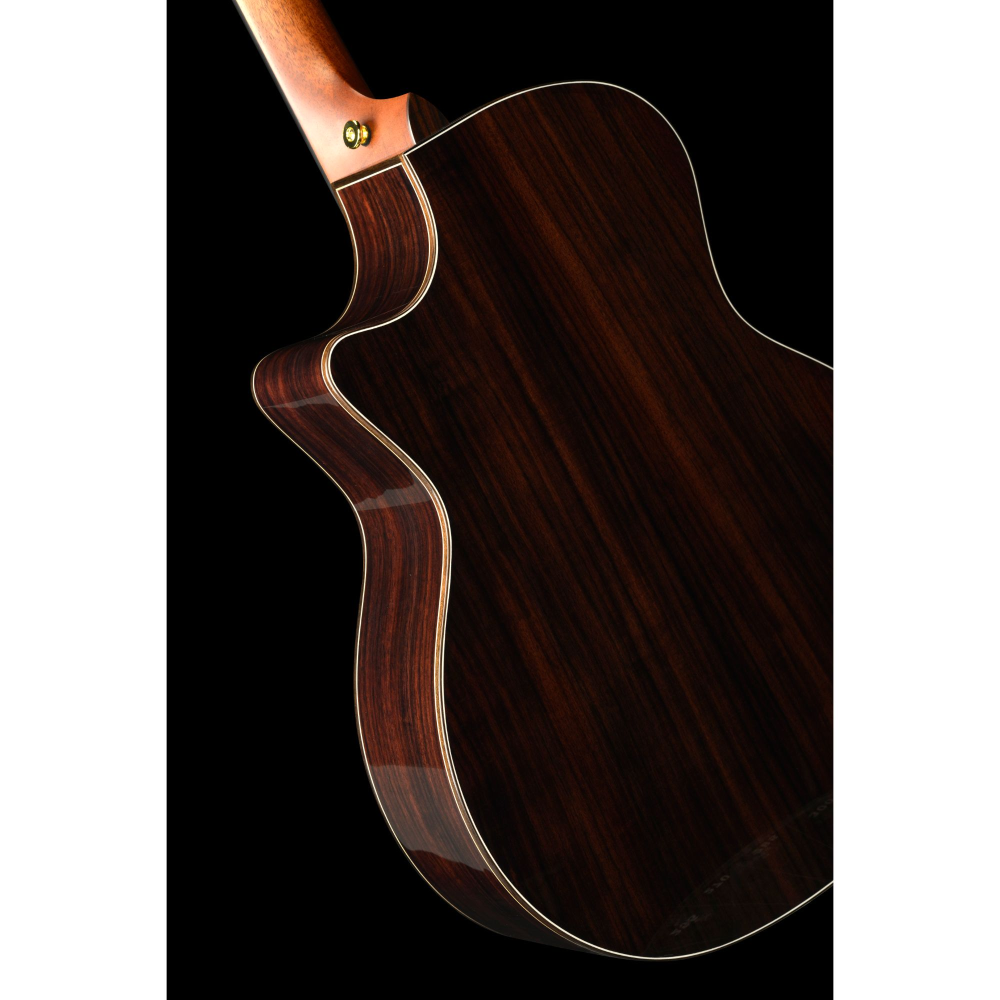
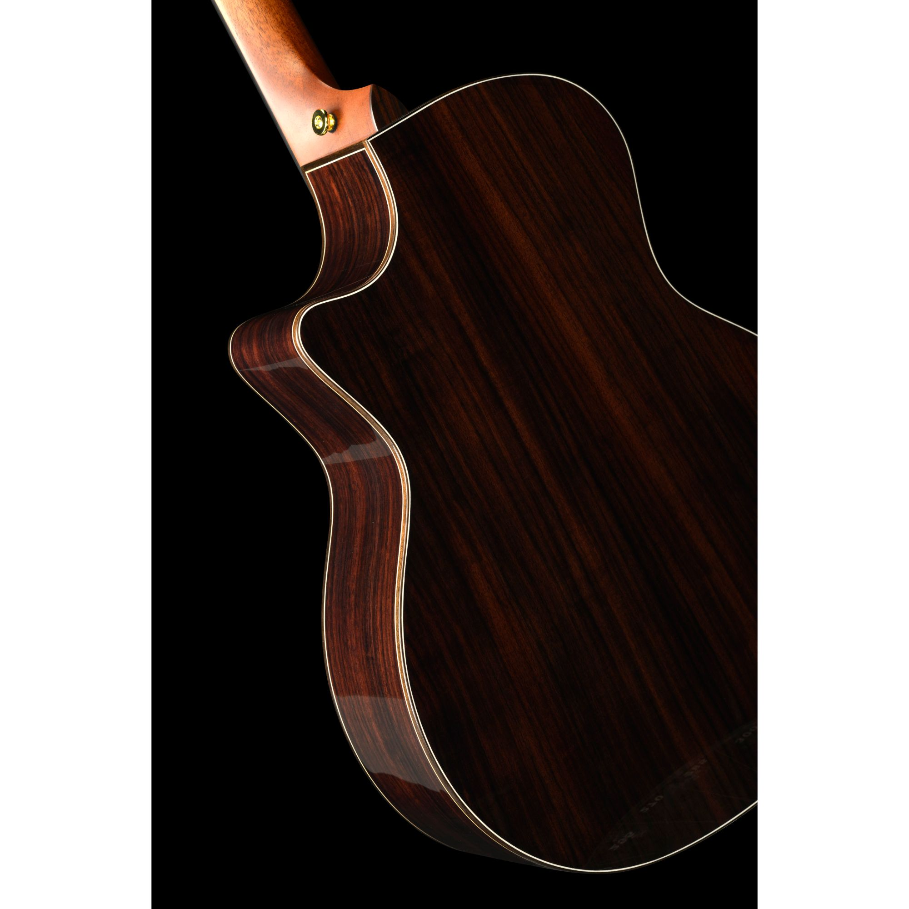
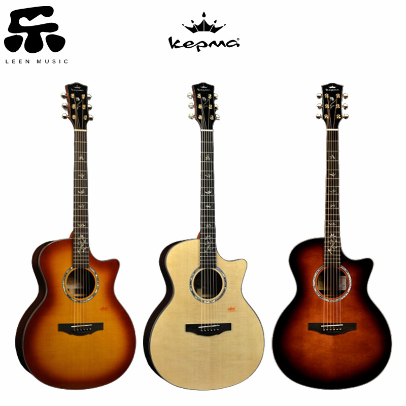

My favourite guitar
 

Kepma B1:

Kepma Elite B1-GA Series Solid Sitka Spruce Top,
Side & Back Solid Indian Rosewood East Indian Rosewood,
Grand Auditorium Acoustic Guitar with Deluxe Hardshell Case
• Body Style: Grand Auditorium
• Scale Length: 647.25mm/25.48″
• Top: AAA Solid North America Sitka Spruce
• Back/Sides: Solid Indian Rosewood
• Neck: Pressure-tested African Mahogany
• Neck Reinforcement: Dual Carbon Fiber rods
• Neck Thickness: 21mm-22mm (1st Fret-9th Fret)
• Neck Width: 43mm/1.7″
• Neck Finish: Smooth Satin
• Truss Rod: 440mm Bidirectional adjustable steel
• Fretboard: African Ebony 400mm radius / 457mm*57mm
• Sound hole Rosette: New Zealand Abalone
• Number of Frets: 20
• Saddle: Tusq Synthetic Bone
• Nut: Tusq Synthetic Bone
• Bridge: African Ebony
• Fretboard Inlay: New Zealand Abalone flower shell inlay
• Binding: Figured Maple
• Finish: High gloss
• Bridge Pins: African Ebony
• Pickguard: Transparent
• Strings: Elixir Acoustic Phosphor Bronze with Nanoweb Coating (0.012-0.053)
• Tuning Machines: Kepma sealed die-cast gold 18:1
• Case: Kepma TKL Deluxe ABS Hardshell